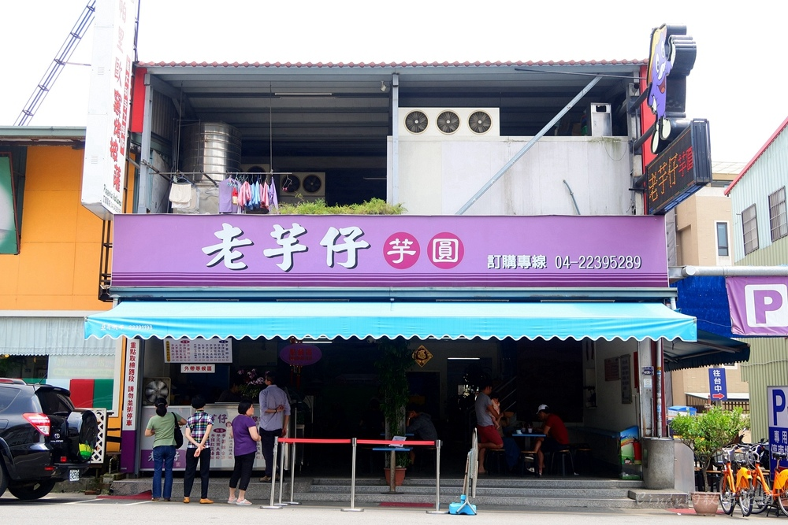

地址：台中市北屯區東山路一段408-2號。*有專屬停車場*
電話：(04)2239-5289
營業時間：09:00~22:00

老芋仔芋圓是台中大坑超人氣排隊美食，跟東東芋圓一樣是台中芋圓推薦名店。老芋仔芋圓選用大甲的檳榔心芋，愛吃芋頭的人可以來吃吃看是不是自己喜歡的口感。店內販售的品項滿多的，有冰品跟冷飲，最棒的是還有超大的專屬停車場，方便來吃冰的客人。
來到【老芋仔芋圓】直接點『芋圓綜合冰』就對了～剉冰上有滿滿配量～珍珠、芋圓、紅豆、超大塊的蜜芋頭，再淋上煉乳!!這樣一碗冰看起來很樸實，但是古早味就是超美味!!
炎熱的夏天來上一碗冰品超解暑。就算是冬天，店家也有提供熱的芋圓綜合，所以一年四季都可以來吃上一碗阿。